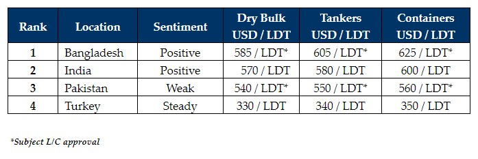

inWeekly Demolition Reports13/03/2023

Recycling markets remain firmly poised for another week, following a stunning resurgence by theBangladeshi market (in particular) that leaves them atop the price rankings board.
Indeed, levels close to and even over USD 600/LDT are now being regularly presented on various vessels and this is inducing more Ship Owners to sell their vessels, especially as freight rates in the dry bulk and container sectors are failing to improve sufficiently for Owners to keep holding onto their aging tonnage.
Cape rates have come back this past week, leaving question marks over whether the larger LDT dry units will hit recycling markets any time soon. Overall, container and dry bulk chartering levels are still sufficiently down from the previous few restorative years.
Tankers are pretty much assured not to come for recycling anytime soon – especially as wet tonnage continues to earn impressively high numbers after the last few years of bloodletting and pain.
On the local markets front, after an extremely barren 8 months or so in Bangladesh, it is good to see the market there back firing on all cylinders and some excellent numbers have been seen in recent weeks, particularly on various LNGS, Capes, and Containers.
India lags a rampant Bangladesh by some ways but is still competitive on the raft of green HKC vessels that continue to be made available, and sentiments are indeed firming again in Alang off the back of a repeal in import duty on floating assets for recycling.
Pakistan is stranded far from any meaningful activity – both struggling with L/Cs and competitive pricing, so there is little sense talking vessels into a marginalized Gadani at present.
Finally, the Turkish market has reported a softening of import steel rates as the Lira plummets to a new record low approaching TRY 19.X against the U.S. Dollar.
For week 10 of 2023, GMS demo rankings / pricing for the week are as below.

📄 Download PDF: Ship-recycling-market-insight-week-10-2023-Firmly-Poised.pdfSource: GMS,Inc. ,https://www.gmsinc.net/gms_new/index.php/web